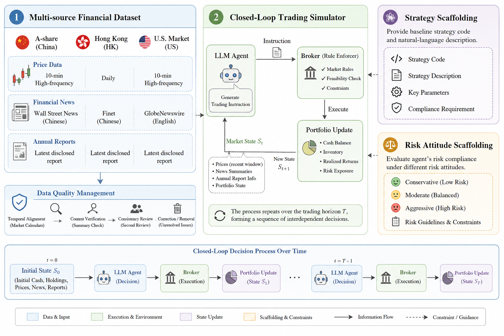
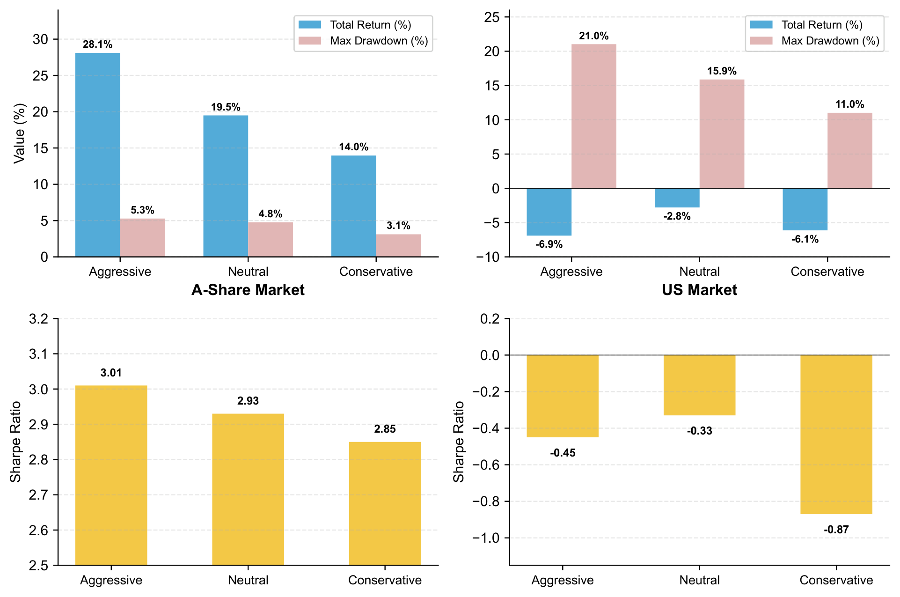

Current evaluation paradigms for Large Language Models (LLMs) in the financial sector rely heavily on static question-answering datasets and frequently neglect real-world market frictions, such as minimum trading lot sizes, capital constraints, settlement rules, and transaction costs. These limitations make existing evaluations inadequate for assessing a model's adaptive capabilities in authentic, continuous trading environments. To address this gap, we propose RISCTrade, a dynamic multi-market benchmark designed to audit the Risk-Instruction and Strategy-Compliance capabilities of LLMs in closed-loop trading. RISCTrade is grounded in multi-source heterogeneous financial data and covers three major global markets: A-share, Hong Kong, and U.S. equities. It employs continuous sliding-window evaluation to mitigate data contamination risks and incorporates broker-enforced execution constraints to ensure realistic portfolio updates. A central component of RISCTrade is the Risk Attitude Scaffolding mechanism, which requires models to explicitly align their trading decisions with specified risk profiles, including Aggressive, Neutral, and Conservative mandates. Based on an extensive evaluation of several state-of-the-art LLMs, our empirical results reveal three key insights: (1) models exhibit significant asymmetry in trend adaptation—struggling in bull markets while demonstrating notable loss mitigation during drawdowns; (2) LLMs can display monotonic risk-mandate compliance in specific markets, though profitability remains regime-dependent; (3) regional models demonstrate distinct competitive advantages in their corresponding local markets. Overall, RISCTrade shifts financial LLM evaluation from static prediction toward dynamic, risk-aware, and compliance-oriented assessment.


LLM agents struggle to capture excess returns in strong bull markets (all models underperform buy-and-hold in A-share), but demonstrate notable value in downside protection during declines (DeepSeek V3.2 achieves −5.18% vs. benchmark −9.39% in the U.S. market).
In the A-share market, Minimax-m2.5 shows clear monotonic compliance: total return decreases from 28.10% (Aggressive) to 19.49% (Neutral) to 13.96% (Conservative), with maximum drawdown also decreasing monotonically. Compliance patterns are more nuanced in the U.S. market.
Chinese-developed models (Kimi-k2.5, GLM-5, Minimax-m2.5) show competitive performance in the A-share market, suggesting stronger familiarity with local market conventions. Model performance is not simply correlated with model scale or proprietary status.
@article{risctrade2025,
title = {RISCTrade: A Dynamic Multi-Market Benchmark for Risk-Mandate Compliance
of Large Language Models in Closed-Loop Trading},
author = {Huang, Wenliang and Li, Junkai and Yu, Zengyi and Kong, Xiangjie},
year = {2025}
}